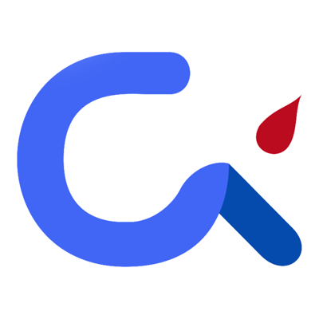
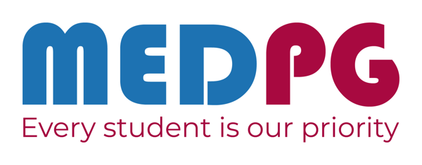
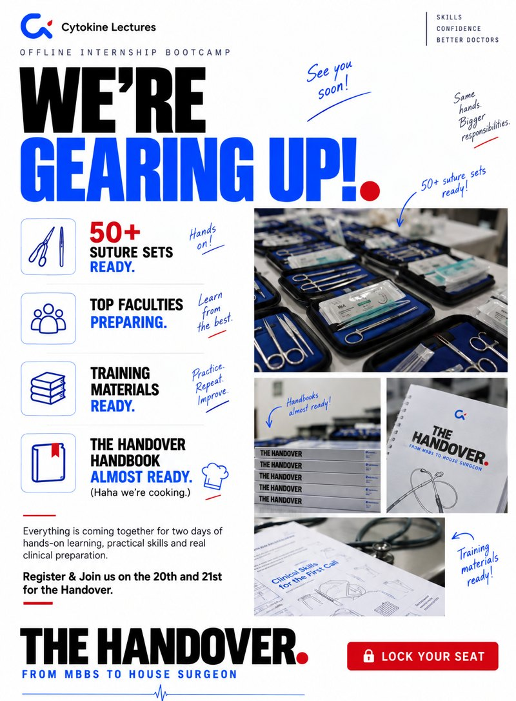

Clinical education × MedTech systems
Building the systems that connect medicine, education and MedTech in Malabar.
Medinn is the practice of Dr. Sidharth Narayanan, a clinician who builds edtech growth systems and MedTech innovation ecosystems, bringing medical colleges, engineers, makers and startups together to grow Malabar's biomedical startup ecosystem.


{{ prompt }}
{{ hint }}
Worked with and alongside
The moat
Growing Malabar's biomedical startup ecosystem, between the clinic, the classroom and the lab.
Medinn sits where clinical education meets MedTech. It builds the systems that reach medical students at scale, and the relationships that bring medical colleges, engineers, makers and startups to the same table.
Edtech systems
MedTech innovation systems
Roles Medinn plays
Flagship · Cytokine Lectures
The Handover.
From MBBS to house surgeon
A two-day offline internship bootcamp for new doctors across Kerala, held on 20–21 September 2026 at Sana Tower, next to Calicut Medical College. Medinn conceptualized, ran, marketed and executed it for Cytokine Lectures.
Tracks: Medicine, Emergency Medicine, Surgery (live and hands-on) and Orthopaedics (plaster room and immobilisation).
Included: The Handover Handbook, training materials and recorded classes.
Partners: Baby Memorial Hospital group, with MEDPG and KNYA scrubs.



Timeline
The exploits, year by year.
Summits, hackathons, conferences and launches, with photos and posts where they exist.
Services
Pick a service to see the work behind it.
Each service lists the projects where it has already been delivered.
{{ svcTitle }}
{{ svcText }}
Proven by
Selected work
Filter the work by type.
Each number says exactly what it measures: direct sales, revenue helped build, or attendance.
Research & credentials
Clinical grounding behind the commercial work.
MBBS at Government Medical College, Kozhikode (2020 onwards), currently completing the compulsory rotating internship.
Publications
Nutritional Assessment of Cancer Patients: A Study from a Tertiary Cancer Care Center in Kerala (2026). Metastatic Solitary Fibrous Tumor of Parapharyngeal Region: A Case Report with Review of Literature (2025). Both in the Indian Journal of Medical and Paediatric Oncology. Peer reviewer for JMIRx Med (2024). Co-author of the Cytokine Prescription Guide (Edition 1) for interns and GPs.
KUHS Research Appreciation Award, 2024
For a community medicine project on risk factors for non-communicable diseases among medical students at a government medical college in North Kerala (unpublished).
Research presentations
Third prize, paper presentation, MedMeet 3.0 at Calicut Medical College (October 2024). Presented at the All Kerala community medicine poster competition, including the KUHS award project.
Juvenile justice elective, 2024–25
A case study on the juvenile justice system in Kozhikode and the role of NGOs in reducing recidivism, presented at poster sessions (unpublished). Reflects an interest in sociology, community medicine and mental health.
Certifications
Introduction to Systematic Review and Meta-Analysis, Johns Hopkins University via Coursera (July 2024). Bioentrepreneurship Basic Certification, Kerala Biotechnology Commission. Bio-entrepreneurship Advanced Certification, a 5-day residential course by the Kerala Biotechnology Commission with IIT Palakkad Technology I-Hub Foundation (21–25 October 2025). Training workshop on LGBTQIA+ affirmative healthcare, Sangath iHEAR AffirmCare project (October 2024).
Speaking & leadership
Panelist, HealthTech track, IEDC Summit at NIT Calicut (October 2024), on why healthcare needs engineers, with Dr. Moopen's iNEST. Speaker on student-led innovation and healthtech ecosystems at NIT Calicut IEDC. Speaker, AI in Healthcare Virtual Global Summit (December 2024). Two-time University Debate and Extempore Champion.
Collaborations
The organizations Medinn has built with.
Companies, institutions and communities across edtech, events, innovation and healthcare.
Building or growing something in healthcare? Let's talk.
Tell me what you are launching, running or scaling, and I will tell you honestly whether Medinn is the right fit.
Medinn is the independent consulting practice of Dr. Sidharth Narayanan. His clinical training and Medinn's commercial work are kept separate, and Medinn does not offer medical advice.